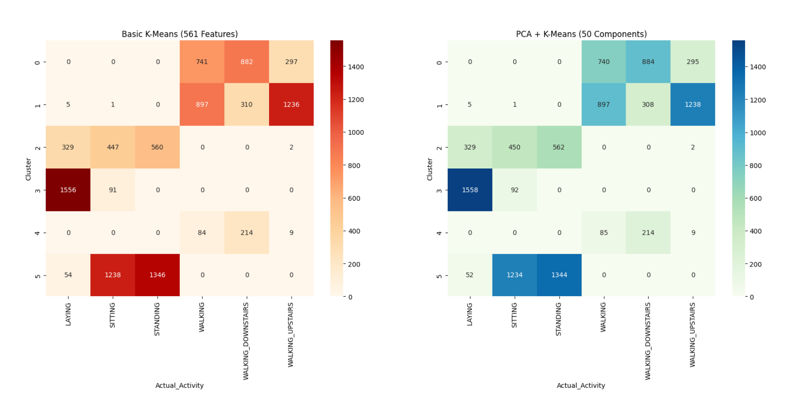
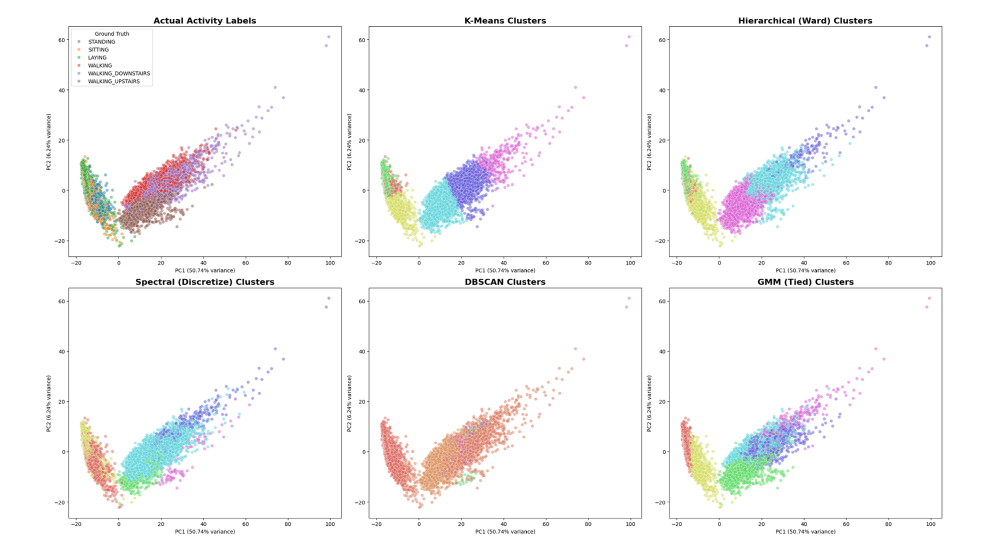
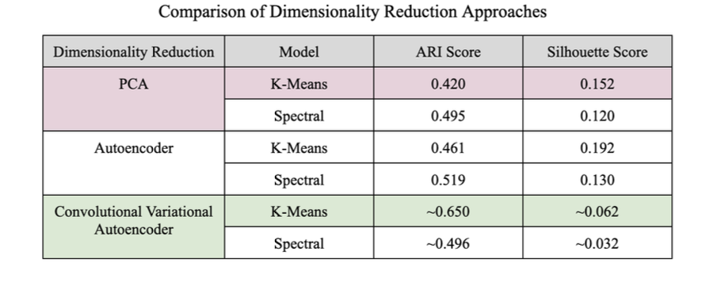
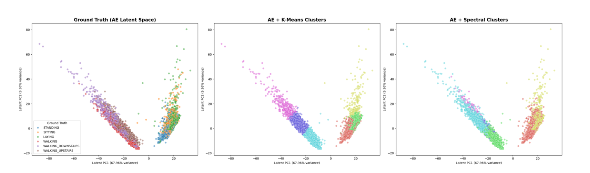

Human Activity Recognition Using Unsupervised Clustering
A comparative analysis of clustering methods on the UCI Human Activity Recognition Using Smartphones dataset,
with Autoencoder and CVAE extensions for non-linear feature learning.
CS 472/572, Spring 2026
Bailey Hall and Josselin Retiguin
Dataset: UCI Human Activity Recognition Using SmartphonesTask: Unsupervised ClusteringBest Result: CVAE + K-Means
Overview
Human Activity Recognition (HAR) has become increasingly important as smartphones and wearable devices
continue to collect high-frequency accelerometer and gyroscope data in daily life. This project studies
how well unsupervised clustering methods can recover activity structure from the UCI Human Activity
Recognition Using Smartphones dataset.
Five clustering models were compared on standardized data: K-Means, Hierarchical Agglomerative Clustering,
Spectral Clustering, DBSCAN, and Gaussian Mixture Models. PCA was used as the dimensionality
reduction method, and two extensions were added: a symmetric Autoencoder (AE) and a Convolutional
Variational Autoencoder (CVAE).
Problem
The ever-increasing adoption of wearable devices
and smartphones has allowed for the integration of
high-frequency inertial sensors to become a part
of many people’s daily lives. This has led Human
Activity Recognition (HAR) to transform from a
niche research area into a primary focus in mobile
health, elderly care, and personalized fitness. The
sheer volume of data generated by these sensors has
steered research toward robust unsupervised clustering approaches that can interpret human movement
without human intervention. However, processed
sensor data is inherently high-dimensional and often
contains complex, non-linear relationships between
data features that linear dimensionality reduction
techniques used in traditional HAR clustering research fail to capture.
Dataset
The UCI HAR dataset contains 10,299 total records with 561 extracted features from smartphone
accelerometer and gyroscope signals across six activities.
Goal
The objective of this project is to provide a comparative analysis of unsupervised
clustering performance on the UCI Human Activity Recognition Using Smartphones Dataset.
Rather than compare a limited number of algorithms across multiple datasets, this study
focuses on five distinct clustering models: K-Means, Hierarchical Agglomerative,
Spectral, DBSCAN, and Gaussian Mixture Models, each applied to a single standardized dataset.
Methods
Preprocessing
Combined train and test data into one analysis table
Retained labels only for evaluation with Adjusted Rand Index (ARI)
Applied Principal Component Analysis (PCA) to data reducing
the feature space from 561 features to 50 principal
components.
Clustering Models
K-Means
Hierarchical Agglomerative Clustering
Spectral Clustering
DBSCAN
Gaussian Mixture Models
Key Results
The rows are sorted by ARI score in descending order. Spectral achieved the highest ARI score,
while DBSCAN resulted in the lowest ARI score.
Among the traditional clustering methods tested on the PCA-processed data, Spectral Clustering
performed best. This result shows that the PCA-transformed representation preserved enough structure
for meaningful comparison across the five clustering models evaluated in this study.
The traditional methods achieved a useful baseline for unsupervised Human Activity Recognition on
a single standardized dataset, with clear differences in clustering quality across the models.
Read figure descriptions below to learn more details about performance results.
Figures
The figures below highlight the main results of the project, from the PCA stage through the
traditional clustering comparison.

Figure 1. K-Means Results on Original Data (left) vs. PCA Data (right). On both of the plots, the x-axis contains the ground truth activity
labels, while the y-axis contains the learned K-Means cluster IDs. Each of the cells contains a value representing the number of data points
from a given ground truth activity group that were predicted to belong to a particular learned cluster.
Figure 2. Comparison Table of Clustering Model Performances on the
PCA-Processed Data. The rows are sorted by ARI score in descending
order. Spectral achieved the highest ARI score (highlighted in green)
while DBSCAN resulted in the lowest ARI score (highlighted in
magenta).

Figure 3. Clustering Visualization for Model Comparison. Each of the scatter plots utilizes the first two principal components for 2D
visualization, with the first principal component (PC1) on the x-axis and the second principal component (PC2) on the y-axis. The ‘Actual
Activity Labels’ plot contains a legend of ground-truth cluster labels for reference. The rest of the plots don’t contain a legend as the learned
clusters are represented by IDs (i.e., 0-5).
Extensions
We implemented a basic Autoencoder (AE) and a Convolutional Variational
Autoencoder (CVAE) in order to obtain two different 50-dimensional learned latent spaces. Clustering
was then performed on the data taken out of this latent space. As Spectral (Discretize) proved to
perform the best on the PCA-processed data, it was tested on the latent space data along with K-Means.
Autoencoder (AE)
A symmetric autoencoder was implemented using TensorFlow and Keras.
The Encoder was constructed using a 150 dimensional dense hidden layer
with ReLU activation and an additional dense layer that compresses
the data into the 50-dimensional latent space. The Decoder mirrors the Encoder architecture in order
to reconstruct the original input. The model was trained for 50 epochs using the Adam optimizer and
Mean Squared Error (MSE) loss.
Convolutional Variational Autoencoder (CVAE)
Also using TensorFlow and Keras, a CVAE was implemented to attempt
to capture any temporal or spatial correlations in
the data. The Encoder utilizes 1D Convolutional
layers (filters are set to 32 and 64) followed
by 1D MaxPooling layers to downsample the
feature vector. The Encoder learns a probability
distribution that a sampling layer utilizes to
generate latent vectors. The Decoder mirrors the
Encoder architecture in order to reconstruct the
original input. The overall model attempts to
minimize a total loss function that consists of
Reconstruction Loss (MSE) and Kullback-Leibler
(KL) Divergence. A small β coefficient (0.0001)
was applied to the KL term to reduce its weight
on total loss, which allows for the balance of both
reconstruction accuracy and latent space structure.
Read figure descriptions below to learn more details about performance results.
Extension Figures

Figure 4. Comparison Table of Clustering Performance on Various
Dimensionality Reduction Techniques. Clustering was performed on
PCA-processed data, data from the Autoencoder (AE) latent space,
and data from the Convolutional Variational Autoencoder (CVAE)
latent space. K-Means on the CVAE-processed data achieved the
highest ARI score (highlighted in green) while K-Means on the
PCA-processed data resulted in the lowest ARI score (highlighted in
magenta). Note that due to the nature of our CVAE implementation,
we can only achieve approximate values for the scores even after
setting the random seed to 42.

Figure 5. Clustering Visualization for Model Comparison in AE Latent Space. Each of the scatter plots utilizes the first two principal components
of the latent space for 2D visualization, with the first principal component (PC1) on the x-axis and the second principal component (PC2)
on the y-axis. The ‘Ground Truth’ plot contains a legend of ground-truth cluster labels for reference.
Figure 6. Clustering visualization for model comparison in the CVAE latent space.
Each scatter plot uses the first two principal components of the CVAE latent space for 2D visualization.
This is the most important extension figure on the website because it illustrates the strongest overall
result in the project: the CVAE representation enables K-Means to recover activity groupings much more
effectively than the PCA result.
How to Run
Google Colab
Open Project.ipynb in Colab.
Go to Runtime > Change runtime type.
Select GPU as the hardware accelerator.
Download and extract data.zip from the repository.
Upload the required CSV files to Colab before running the cells.
Run the notebook from top to bottom.
The dataset is stored in data.zip in the GitHub repository. Extract the archive first, then upload
the required CSV files to Colab before running the notebook.
Conclusion
This project showed that traditional clustering methods can provide a useful starting point for Human Activity
Recognition, especially when paired with PCA as a simple and effective linear dimensionality reduction
step. Among the classical models tested on the PCA-transformed data, Spectral Clustering produced the
strongest performance and showed that meaningful activity structure can be recovered without supervision.
The extension stage, however, showed that learned latent representations can improve on that PCA baseline.
The Autoencoder demonstrated that non-linear compression can preserve clustering structure more effectively
than PCA alone, while the CVAE produced the strongest overall results in the project when paired with
K-Means. Overall, the results support the idea that hybrid deep learning and unsupervised clustering
frameworks are a promising direction for more accurate and efficient human activity recognition from
smartphone sensor data.